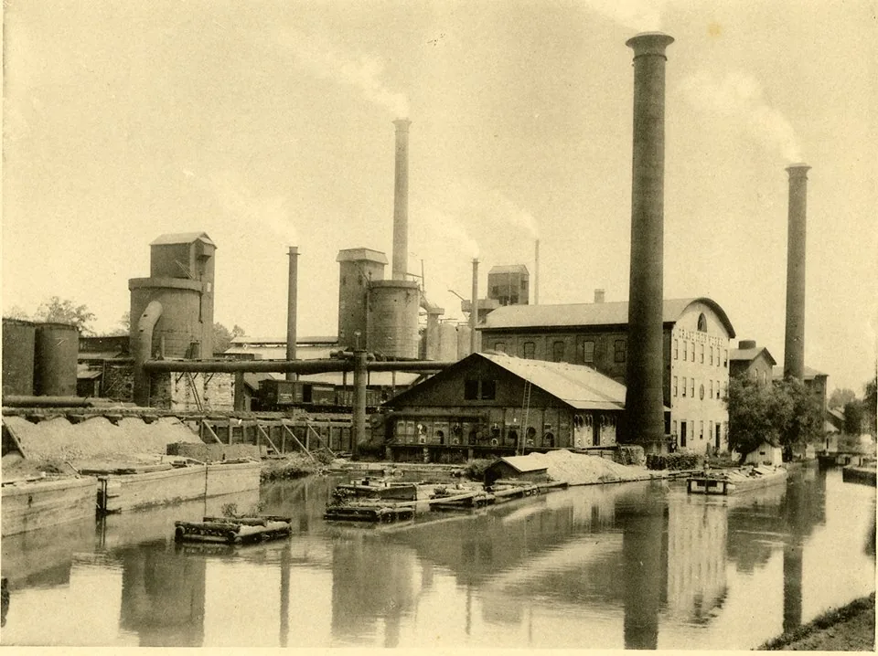
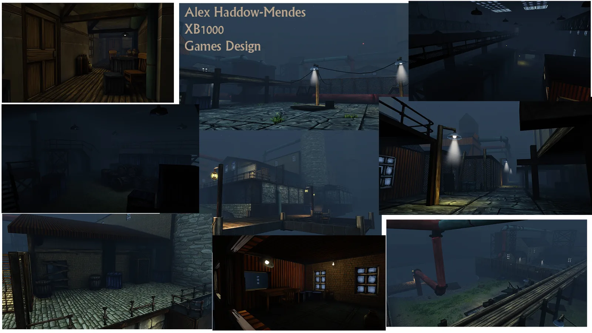
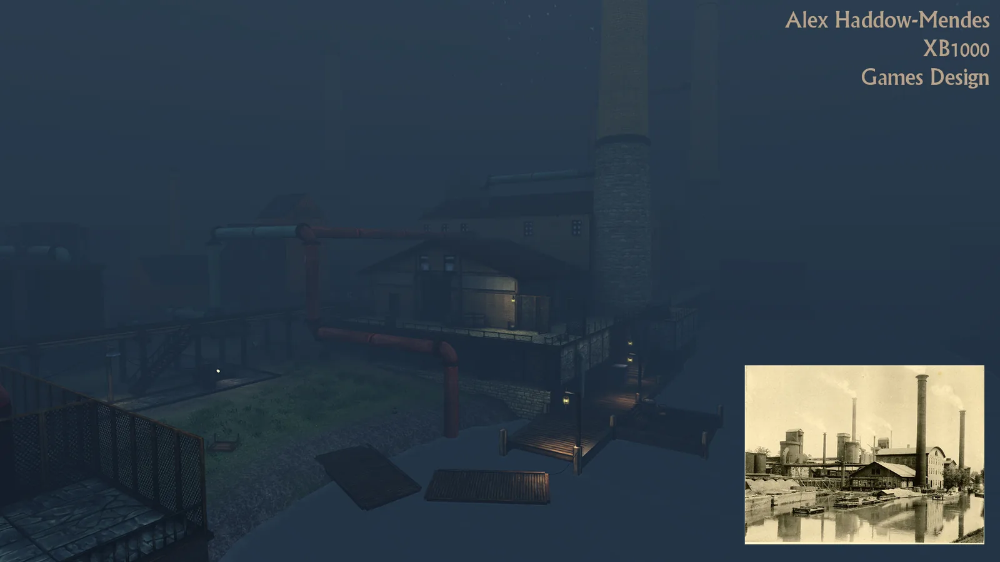

Ether One Level
- Year
- 2013
- Platform
- PC
- Engine
- UDK



A level built from a reference image, using a set of assets from the video game Ether One.
My role
I was tasked with creating the level from the reference image. Ether One tells a story and its gameplay is near non-existent, so guiding the player through the environment and keeping the flow was most important.
What I did
- Used train tracks to lead the player through the level, giving a route when lost and a familiar sight while continuously going under and over
- Designed the level to be atmospheric, limiting breaks in the gameplay flow
- Used elevation and sight lines to keep the player moving
Elevation
The level is based around the train tracks: the player continuously goes underneath, above and on top of them. The tracks are a familiar route for the player to follow.
Sight lines
Sight lines were designed to emphasise the tower. I placed a flashing red light to draw the player's eye, pointing in the correct general direction.